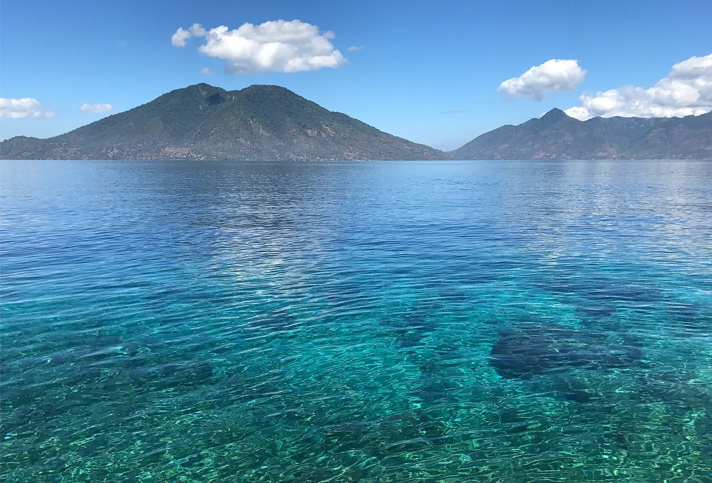

Alor — détroit de Pantar
Alor, Indonésie · plongée

À l’est de l’archipel de la Sonde, les détroits d’Alor brassent une eau riche : tombants couverts de coraux mous, macro et poissons pélagiques. Les plongées partent en général d’Alor Kecil ou de Kalabahi.
- Lieu
- Alor, Indonésie
- Niveau
- Intermédiaire
- Activités
- plongée
- Type d'eau
- Mer / océan
- Coordonnées
- -8.27, 124.41 (position approximative du secteur)
Dangers à connaître
- Courants puissants, parfois descendants, sur certains sites.
- Remontées d’eau fraîche possibles.
Le conseil d'Ocean Buddy
Plonge avec un centre local qui connaît les horaires de courant et prévois une combinaison un peu plus épaisse qu’ailleurs en Indonésie.
Ouvrir dans Ocean Buddy Télécharger sur l'App Store
Source : Fiche Ocean Buddy · septembre 2026 · à vérifier localement.